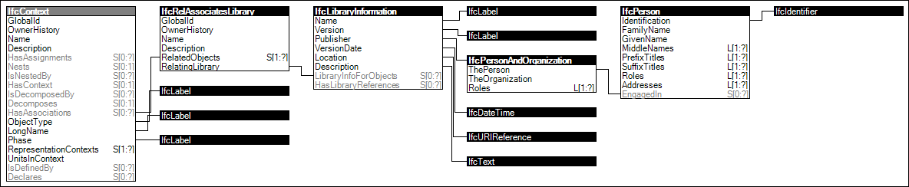

Link to this page
Link to this pageProjects may define libraries holding revisions of the project such as model servers or databases. Multiple libraries may be referenced to indicate multiple revisions, multiple branches, and/or multiple servers.
If IfcLibraryInformation is provided, the project must be retrievable (provided the user has access permissions) using values as follows:
| IfcLibraryInformation | HTTP Header | Description |
|---|---|---|
| Location | / | fully qualified URL for retrieving (or updating) the project in the content type specified |
| Version | ETag | version stamp for qualifying a particular version, in a format specific to the server, which may be sorted by ordinal for comparison |
| VersionDate | Last-Modified | UTC date and time of file as recorded on server |
| Publisher | (username) | the account handle submitting a project revision is identified by the Identification of IfcPerson |
The following standard HTTP operations may be supported by a server (in addition to any extended operations) for retrieving or updating such data given access rights:
| HTTP | Description |
|---|---|
| OPTIONS | Determine the available HTTP operations. |
| HEAD | Determine the latest version of a project without downloading it. |
| GET | Download the latest version of a project (or specific version with ETag provided). |
| PUT | Replace the project, clearing any version history. Servers may reject or otherwise modify such submitted content. |
| POST | Upload a new version of a project, appending to version history. Servers may reject, merge, or otherwise modify such submitted content. |
| DELETE | Delete the project. |
The following standard MIME types may be supported by a server (in addition to any proprietary formats) for uploading and downloading data for use in the HTTP Accept header:
| MIME Type | Format |
|---|---|
| application/xml | IFC-XML |
| application/step | IFC-SPF |
Figure 7 illustrates an instance diagram.
 |
Figure 7 — Project Library Information |